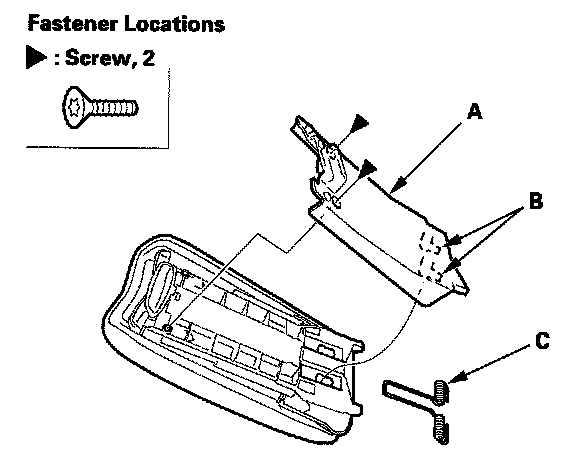
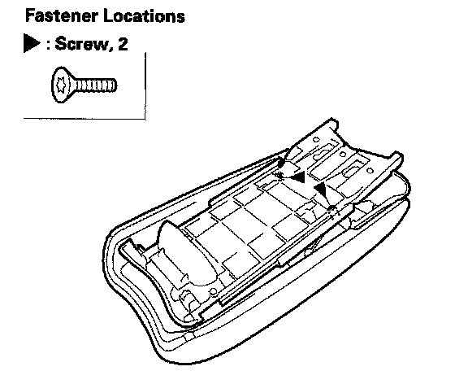
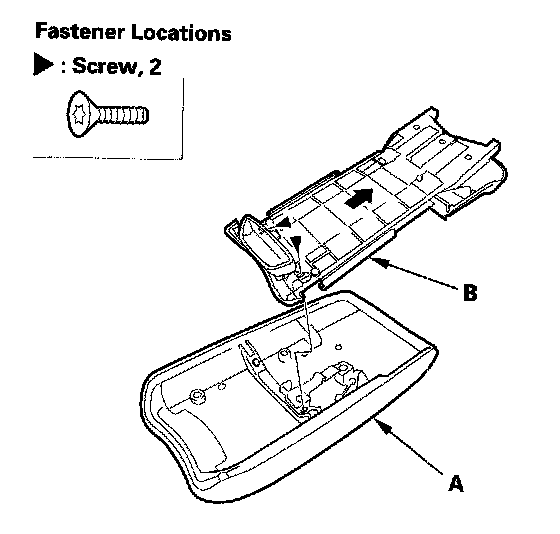
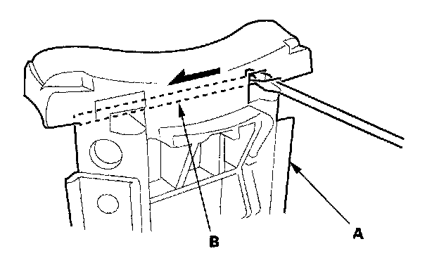
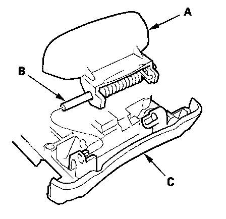
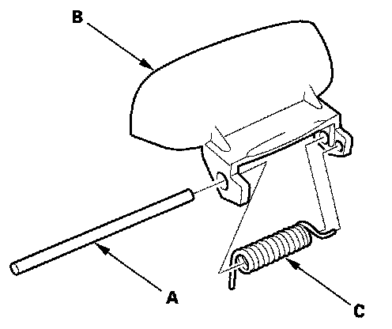

Armrest Lock Replacement
Armrest Lock ReplacementFor Some Models
NOTE: Take care not to scratch the armrest and related parts.
1. Remove the center console armrest.

2. Using a T15 TORX bit, remove the screws. Slide the armrest liner (A) downward to release the hooks (B), then remove the armrest liner and armrest spring (C).

3. Using a T15 TORX bit, remove the screws.

4. Slide the armrest (A) all the way forward, using a T15 TORX bit, remove the screws, then remove the armrest backbone (B).

5. From the back of the armrest backbone (A), push the edge of the armrest lock pin (B) with a flat-tip screwdriver, then slide the armrest lock pin fully.

6. Remove the armrest lock (A) with the armrest lock pin (B) from the armrest backbone (C).

7. Remove the armrest lock pin (A), then separate the armrest lock (B) and armrest lock spring (C).
8. Install the armrest lock in the reverse order of removal.